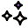
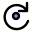
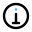
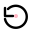
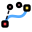
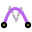
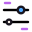

Primary navigation
 home
homecreate
 explore
explore favourite
favourite download
download more
moreAsset review only: no application icons are replaced by this document. Colours are flat; no gradients. Browser-based thumbnails represent the shipped individual SVG files.
homeexplorefavouritedownloadmore randomize
randomize primes-only
primes-only undo
undo draw-path
draw-path recenter
recenter path
path
effects lighting
lighting close
close
rotate copy
copy
info reroll
reroll
resetSame approved artwork grammar. The Edit destination is proposed to use adjustments (edit-controls), while the existing pencil-and-path is retained for Draw.
 edit-controls
edit-controls import-path
import-path
anchor-points
smooth-path
focus-slider export-png
export-png